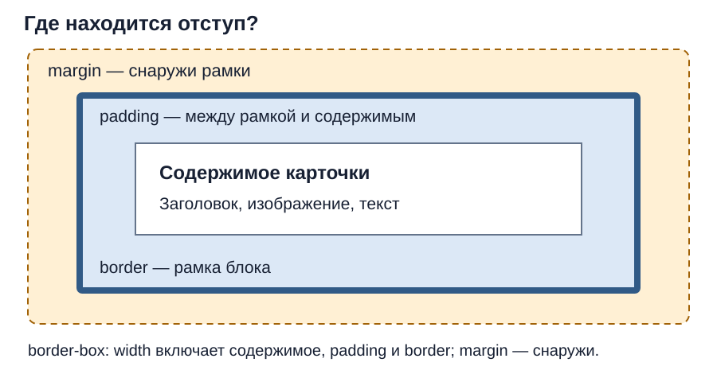
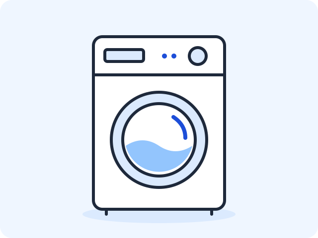

CSS: селекторы, каскад, размеры, отступы и блочная модель
Продолжаем свою папку VariantNN-web. Сегодня нужно оформить основную часть трёх страниц и отделить друг от друга карточки каталога. Работайте по шагам ниже: изменили → сохранили → обновили браузер → посмотрели результат.
Продолжайте свой проект или возьмите тексты, картинки и цвета из раздела «Демонстрационный пример».
| Шаг | Где работать | Что получится |
|---|---|---|
| 1 | Три HTML-файла | Все используют один CSS |
| 2 | HTML | У основной части и карточек есть классы |
| 3 | CSS | Общий шрифт и удобная ширина страницы |
| 4 | CSS | У трёх карточек видны рамки и отступы |
1. Откройте прежний проект
В папке должны быть index.html, catalog.html, form.html, style.css и изображения. Пройдите по меню все три страницы. В меню каждой — две ссылки на другие страницы; ссылки на открытую страницу нет.
Внутри head каждого HTML-файла проверьте подключение:
<link rel="stylesheet" href="style.css">
Если чего-то не хватает, восстановите по паре 13 или паре 14. Новую папку проекта создавать не нужно.
2. Добавьте классы в HTML
Класс — имя группы элементов, которое CSS использует для выбора. У существующего main во всех трёх файлах добавьте page:
<main class="page">
В catalog.html найдите три существующих article. У каждого добавьте card. Начало первой позиции примера:
<article class="card">
<h2>Холодильник</h2>
Всё содержимое и закрывающие теги оставьте на месте. Если у элемента уже есть класс, допишите новый через пробел в том же атрибуте.
| HTML | CSS-селектор | Что выбирает |
|---|---|---|
class="card" |
.card |
Все три карточки |
class="page" у main |
main.page |
Основную часть страницы |
Тег h2 |
h2 |
Заголовки второго уровня |
В HTML класс пишется без точки; в CSS перед именем класса нужна точка.
Посмотрите результат: товары и тексты остались на месте. Пока правил для классов нет, внешний вид может не измениться.
3. Оформите основную часть
Откройте style.css. Если нужное правило уже есть, изменяйте его, не добавляйте вторую копию. Прежние цвета и меню сохраните.
* {
box-sizing: border-box;
}
border-box означает: рамка и внутренние отступы входят в заданную ширину блока.
В существующем body оставьте свои цвета и добавьте:
font-family: Arial, sans-serif;
font-size: 1rem;
line-height: 1.5;
margin: 0;
Это свойства внутри body { ... }. Затем добавьте правило основной части:
main.page {
width: 92%;
max-width: 56rem;
margin: 0 auto;
padding: 1rem;
}
| Запись | Для чего нужна |
|---|---|
width: 92% |
Оставляет место по бокам |
max-width: 56rem |
Не даёт содержимому слишком растянуться |
margin: 0 auto |
Ставит блок посередине по горизонтали |
padding: 1rem |
Отодвигает содержимое от края блока |
% здесь считается от ширины родителя. rem зависит от размера шрифта корневого элемента; обычно 1rem соответствует 16px, но настройки браузера могут отличаться. Вычислять размеры на этой практике не нужно.
Посмотрите результат: основной текст на всех трёх страницах читается одинаково; в широком окне содержимое находится посередине.
4. Оформите карточки
Добавьте или дополните правило:
.card {
border: 1px solid #94A3B8;
padding: 1rem;
margin-bottom: 1rem;
}
В правиле .card — селектор, padding — свойство, 1rem — значение. Объявление заканчивается точкой с запятой.

| Часть блока | Что видно в каталоге |
|---|---|
| Содержимое | Название, картинка и текст товара |
padding |
Пространство между содержимым и рамкой |
border |
Рамка вокруг одного товара |
margin-bottom |
Пространство после карточки |
Посмотрите результат: три отдельные карточки стоят сверху вниз. У каждой есть рамка, текст не прижат к ней, соседние карточки не сливаются. Точную толщину и отступы на глаз измерять не нужно.
Если стиль не применился
| Что произошло | Что проверить сначала |
|---|---|
| Не изменилось ничего | Сохранили ли CSS; подключён ли он в этой странице |
| Изменилась только одна карточка | Есть ли class="card" у всех трёх article |
| Одна рамка вокруг всех товаров | Не добавлен ли класс общему контейнеру вместо отдельных article |
| Последние правила не работают | Закрыты ли { }, есть ли ; |
| Значение меняете, а вид прежний | Нет ли другого правила, которое перекрывает это свойство |
При одинаковых селекторах более поздняя запись свойства перекрывает раннюю. Поэтому правьте найденное правило, вместо того чтобы дописывать его копии. Цвет текста обычно наследуется от родителя, но правило самого элемента может его изменить. Эти наблюдения помогают найти ошибку; отдельный отчёт и серия опытов не нужны.
Сохраните папку проекта и переходите к оформлению карточек и формы. Результат двух практик покажете вместе. Если закончили раньше, проверьте три страницы и сохранённое задание для третьей пары.
Демонстрационный пример
Открыть пример
Пример преподавателя «Техника дома · V00». Студентам он не назначается. Все данные трёх страниц сохранены ниже; этот снимок не зависит от сменяемого комплекта вариантов.
Задание: продолжить Variant00-web, подключить один style.css ко всем трём страницам, дать основному main класс page, каждому из трёх article каталога — класс card. Настроить общие размеры и отделить карточки рамками и отступами. Данные страниц и форма сохраняются.
| Где | Что задать в CSS |
|---|---|
* |
box-sizing: border-box |
body |
Шрифт Arial, размер 1rem, межстрочный интервал 1.5, margin: 0; фон #EFF6FF, текст #1E293B |
main.page |
width: 92%; max-width: 56rem; margin: 0 auto; padding: 1rem |
.card |
border: 1px solid #94A3B8; padding: 1rem; margin-bottom: 1rem |
img |
max-width: 100%; height: auto |
В меню каждой страницы две ссылки на другие страницы, без ссылки на саму себя. Карточки идут сверху вниз. На этой паре у них нейтральные рамки; цветные плашки и оформление формы относятся к следующей паре.
После работы откройте главную, каталог и форму. У трёх товаров должны быть отдельные рамки с пространством вокруг текста. Изображения и поля помещаются в своих блоках; переходы и ограничения формы сохраняются. Точные отступы на глаз измерять не нужно.
Содержание главной страницы
Сохранение изображений: скачанные файлы называйте так, как указано в задании: 010-00-fridge.svg → fridge.svg, 010-00-washer.svg → washer.svg, 010-00-kettle.svg → kettle.svg. Сохраняйте их в своей папке images.
| Элемент | Текст или изображение |
|---|---|
| Название приложения | Техника дома · V00 |
| Заголовок главной | Бытовая техника для дома |
| Короткое пояснение | Выберите технику для повседневных дел |
| Описание | Три прибора для кухни и дома. Сравните характеристики и выберите нужный товар. |
| Основное изображение | fridge.svg  |
| Название перехода к каталогу | Посмотреть технику |
| Название перехода к форме | Открыть форму заказа |
| Подпись в подвале | Учебный прототип · Вариант 00 |
На паре 13 главная сохраняет эти тексты, изображение и подпись. Ссылка «Посмотреть технику» ведёт на catalog.html; на паре 14 ссылка «Открыть форму заказа» ведёт на form.html.
Содержание каталога
Название — «Каталог техники». Пояснение — «Три товара с основными характеристиками».
| № | Название | Характеристика | Описание | Файл изображения |
|---|---|---|---|---|
| 1 | Холодильник | 300 л · 2 камеры | Для хранения свежих и замороженных продуктов | fridge.svg |
| 2 | Стиральная машина | 7 кг · 1000 об/мин | Для стирки повседневной одежды | washer.svg  |
| 3 | Электрочайник | 1,7 л · 2000 Вт | Для быстрого нагрева воды | kettle.svg  |
Скопируйте SVG-файлы в папку images веб-проекта по инструкции занятия. Это нейтральные учебные иллюстрации без брендов, созданные для данного примера; рисовать их студентам не требуется.
Используйте все три позиции в указанном порядке. Каждая позиция — отдельный article с названием в h2, изображением с содержательным alt, характеристикой и описанием. Блоки идут сверху вниз. Каталог содержит переход на главную; на паре 14 добавляется переход к форме.
Содержание формы — пара 14
Название формы — «Заказ техники». У каждого поля есть видимая подпись, связанная с элементом через for и id. Для отправляемых элементов задаются name.
| Подпись | Элемент и данные | Уточнение |
|---|---|---|
| Товар | select: Холодильник; Стиральная машина; Электрочайник |
Первая строка пустая; выбор обязателен |
| Количество единиц | Числовое поле | Минимум 1, шаг 1, начальное значение 1; поле обязательно |
| Комментарий к заказу | textarea |
Подсказка: «Например, удобный день доставки» |
| Нужна доставка | Независимый флажок | Выбран в начале |
| Нужна установка | Независимый флажок | Не выбран в начале |
| Срочность заказа | Ползунок от 1 до 5 | Начальное значение 3; края шкалы: «Не срочно» и «Срочно» |
Все шесть элементов таблицы входят в обязательный результат; порядок строк задаёт их расположение в примере 00. Флажки переключаются независимо.
Кнопка отправки — «Проверить заказ». Ссылка «Назад» ведёт на index.html. Из главной и каталога можно перейти к форме, из формы — вернуться на главную.
Отправка методом GET выполняется локально: страница перезагружается, а параметры видны в адресе. Сервер, хранение и обработка заказов отсутствуют. Настройка и объяснение — в статье 14.